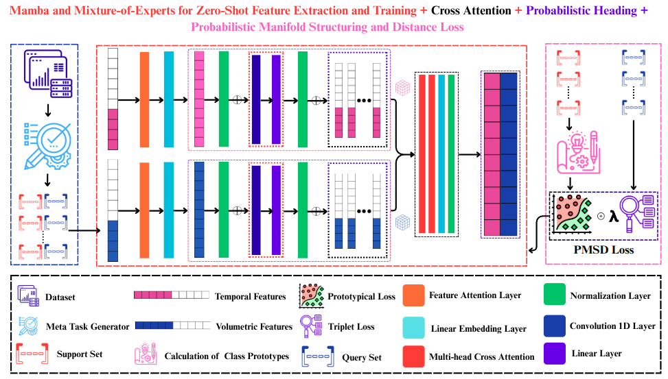
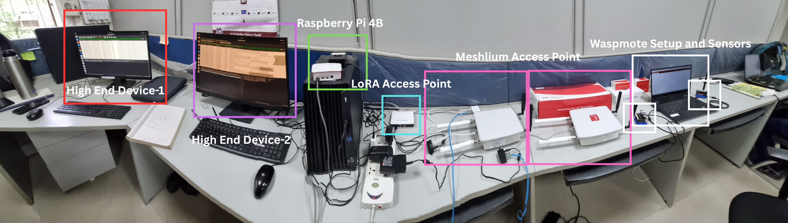

PANDORA: Lightweight Adversarial Defense for Edge IoT using Uncertainty-Aware Metric Learning
Abstract
The rapid augmentation of Internet of Things (IoT) devices that are resource-constrained in nature has significantly expanded the attack surface, exposed critical vulnerabilities in the network. As a result, traditional Intrusion Detection Systems (IDS), which rely on static, signature-based approaches, have become increasingly obsolete. Modern adversaries now employ sophisticated, automated, and often novel (zero-day) attacks that can easily bypass such conventional defenses. Moreover, the existing IDS models with machine learning often fail in real-world scenarios to handle challenges like concept drift and an inability to generalize to unseen threats. To address these gaps, we introduce PANDORA (Probabilistic Adversarial Network Defense Over Resource-constrained Architectures), a novel, end-to-end framework for detecting zero-day attacks on edge devices. PANDORA makes three key contributions: 1) It learns uncertainty-aware probabilistic embeddings to create robust representations of network traffic; 2) It introduces a novel Probabilistic Manifold Structuring and Distance (PMSD) Loss function that enables effective zero-shot generalization; and 3) It utilizes an efficient Mamba-Mixture of Experts (MoE) architecture for on-device deployment. To validate our approach, we also introduce the TTDFIOTIDS2025 dataset, a new, high-fidelity benchmark featuring complex, programmatically generated attacks. Our extensive evaluations demonstrate that PANDORA significantly outperforms state-of-the-art models, achieving an F1-score of 0.971 with just 10-shot adaptation on CICIDS2017. Critically, it achieves up to 99% accuracy in zero-shot detection under domain shift and, when deployed on a Raspberry Pi, maintains a low memory footprint of 24 MB and a throughput of up to 4.26 flows/sec, proving its practical viability for real-time edge security.
Key Contributions
- Introduces uncertainty-aware probabilistic embeddings for robust network traffic representation.
- Proposes PMSD loss for improved manifold structuring and zero-shot generalization.
- Designs an edge-efficient Mamba-MoE architecture for real-time deployment on constrained devices.
- Releases TTDFIoTIDS2025, a high-fidelity IoT intrusion dataset with heterogeneous, subclass-level attacks.
- Validates practical deployment on Raspberry Pi hardware with low memory footprint and usable throughput.
System Architecture

IoT Testbed

Results Tables
Ablation Study of the PMSD Loss Function across Datasets
| Config | CIC17 F1 | CIC17 AUC | CICIoT23 F1 | CICIoT23 AUC | TTDF25 F1 | TTDF25 AUC |
|---|---|---|---|---|---|---|
| Full PMSD | 0.859 | 0.991 | 0.822 | 0.990 | 0.700 | 0.986 |
| Wasserstein only | 0.815 | 0.987 | 0.654 | 0.974 | 0.671 | 0.983 |
| Triplet only | 0.826 | 0.987 | 0.678 | 0.976 | 0.678 | 0.983 |
| Euclidean only | 0.842 | 0.989 | 0.821 | 0.986 | 0.649 | 0.983 |
Ablation of Encoder Architecture across Datasets
| Dataset | Config | Params | Time (ms) | F1 | AUC |
|---|---|---|---|---|---|
| CIC17 | Mamba-MoE | 196,938 | 0.0179 | 0.836 | 0.991 |
| CIC17 | Transformer | 183,552 | 0.1595 | 0.509 | 0.927 |
| CICIoT23 | Mamba-MoE | 195,378 | 0.0181 | 0.813 | 0.985 |
| CICIoT23 | Transformer | 183,552 | 0.1165 | 0.356 | 0.919 |
| TTDF25 | Mamba-MoE | 195,378 | 0.0176 | 0.813 | 0.985 |
| TTDF25 | Transformer | 183,552 | 0.1669 | 0.356 | 0.919 |
On-Device Performance: Baseline / PANDORA
| Metric | CICIDS2017 | CICIoT2023 | TTDF-IoT-2025 |
|---|---|---|---|
| Throughput (Flows/sec) | 0.52 / 2.03 | 1.12 / 4.26 | 0.98 / 3.82 |
| Latency (ms/flow) | 215.10 / 58.20 | 142.50 / 37.34 | 135.20 / 34.76 |
| CPU Usage (%) | 345.20 / 118.70 | 355.80 / 125.60 | 340.50 / 120.20 |
| Memory Usage (MB) | 85.60 / 24.48 | 82.40 / 24.16 | 84.10 / 24.30 |
Video Presentation
BibTeX
@inproceedings{awasthi2026pandora,
title={PANDORA: Lightweight Adversarial Defense for Edge IoT using Uncertainty-Aware Metric Learning},
author={Awasthi, Avinash and Vediya, Pritam and Miranka, Hemant and Battula, Ramesh Babu and Gaur, Manoj Singh},
booktitle={Network and Distributed System Security Symposium (NDSS)},
year={2026},
doi={10.14722/ndss.2026.240713},
url={https://www.ndss-symposium.org/wp-content/uploads/2026-f713-paper.pdf}
}